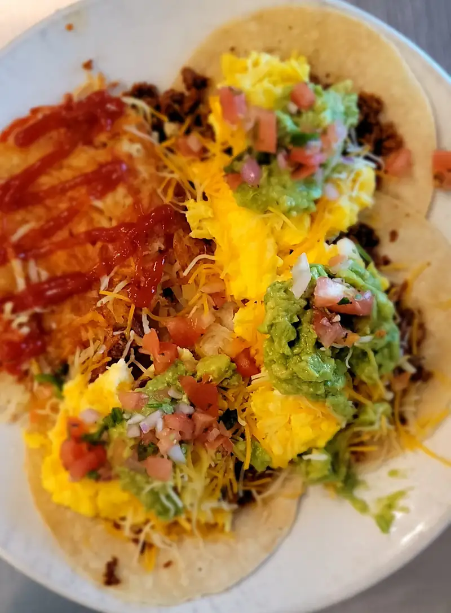
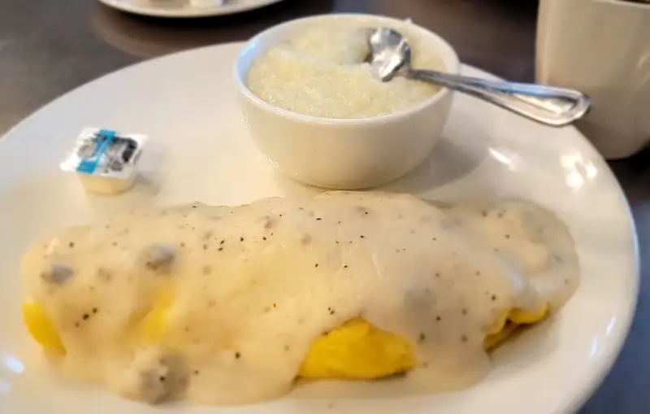
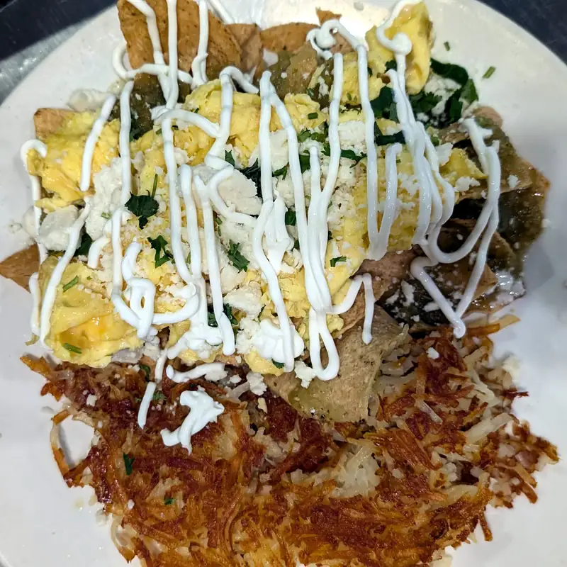
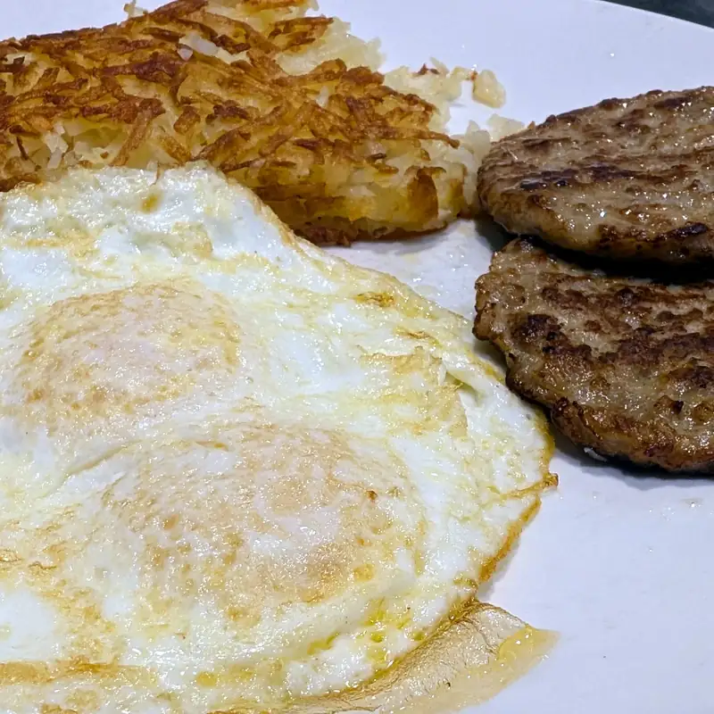
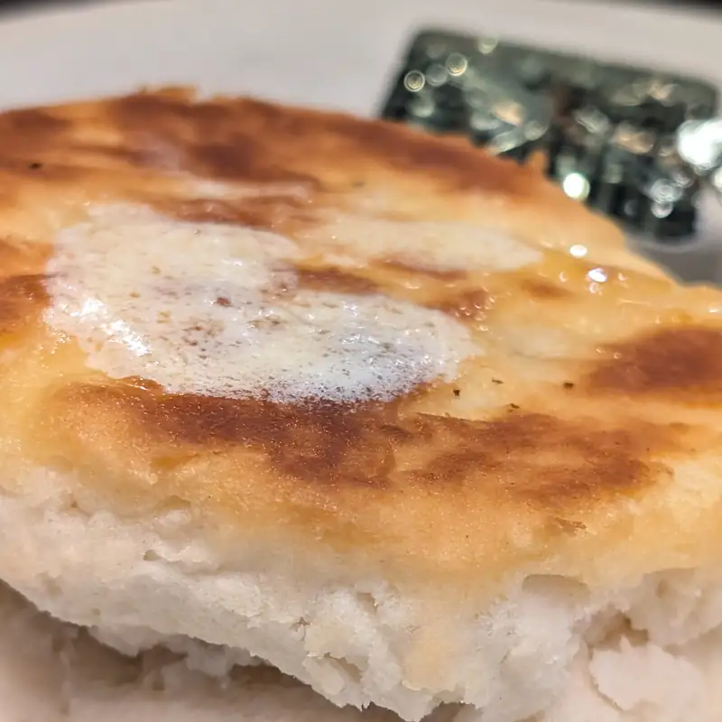

Scrambler Café
Un antes después de este lugar de desayunos local... bueno... "local".. 'ta cerca, pues :P ... y porqué antes y después? porque por alguna razón cuando hice un post de este lugar no escribí nada, solamente subí las fotos así como si se exlicaran solas.. 'che TDA... pero bueno, da la oportunidad a que haga un post de antes y después, porque por lo que hemos visto, este lugar cambió de dueños y ahora tienen un par de platillos nuevos, pero en realidad todo el menú anterior sigue estando ahí.
Del Antes
Y sí, muy antes :P... porque creo que fue la primer o segunda vez que fuimos. En esta visita pedimos tacos? seh.. tacos de desayuno que son un poco... no se... agringados? por decirlo de una manera amable? Buenos, buen sazón y todo, pero pues.. no son tacos mexicanos mañaneros como los que esperamos, y súale que son principalmente de huevo y si no eres el más grande fan del huevo, pues... menos...
{kind=link}

También un omelette que le llaman el "gravy train"... que rellenan con un biscuit y quesos monterrey y cheddar. Aderezad, obviamente con gravy de salchicha, como sería un biscuits and gravy, pero empaquetado en un omelette, pues... en esta ocasión, acompañado de grits, que también les quedan bien buenos.
{kind=link}

Del Después
Con sus nuevos vecinos, que por lo que logramos entender, son ellos mismos de antes, si es que tiene sentido? (los dueños y/o empleados anteriores abrieron un restaurante nuevo en el mismo centro comercial). Bueno, el caso es que ahora hacen chilaquiles, que no hacían antes.. y les quedan buenos! La salsa es fresca y picosilla, como que no es con guajillos como haríamos nosotros en casa.
{kind=link}

Después de haber pedido un desyuno "tradicional" en el otro de nuestros restaurantes favoritos, también lo pedí aquí, nom'as para ver como está el sazón de los platillos viejos y pues no, no me puedo quejar; y hasta podría decir que no han cambiado.
{kind=link}

Esta vez, en lugar de grits, un biscuit... fluffy fluffy!!
{kind=link}

A pesar de que su sazón sigue igual de bueno, y tienen un poco expandido el menú, el lugar está solo comparado con "la competencia"pero pues esperemos que solamente sea la novedad la que hace que vaya la gente al nuevo. Si te interesa, en el menú nuevo tienen un asterisco donde dice que puedes pedir que la carne sea Halal, sin costo adicional.